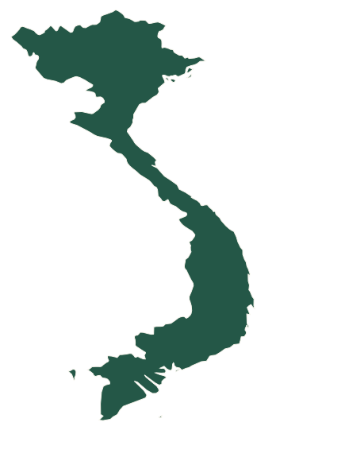

河內 Hà Nội
在湖畔、古街與木偶戲之間，認識越南首都。
VIỆT NAM · 越南 — 越來越南
早上在河內吃碗河粉，走進會安掛滿燈籠的街巷，再到富國島吹海風。喜歡逛街吃小吃，還是想找片沙灘放空？從北到南，挑一段你喜歡的越南。
探索六個目的地 第一次去越南？先看這裡 ↓逛城市、遊海灣、到海島放空，下一站想去哪裡？

先看街頭日常，再把目光移向海灣。
海邊的開闊，與燈籠下的步調。
想逛街看建築，還是留一段時間給海邊？
YOUR VIETNAM POCKET GUIDE
機票怎麼看、越南盾怎麼算、開口要說哪一句？
出發前想知道的，這裡一次整理。
以下為桃園出發、單程直飛參考：
不含報到、入境及市區接駁；實際時間以訂位航班為準。
780 VND
越南盾 · 匯率參考快照台幣 1,000 元，約是 780,000 越南盾。看價格時先確認位數，付款前再核對一次。
參考 Xe 於 2026-11-14 的中間匯率 780.197，取整方便理解。此為資料快照，非即時報價；現鈔匯差與手續費另計。
當地使用越南語。先學一句招呼，買東西時也能用文字詢價。
保留越南文給對方看，也能幫助溝通。
以桃園往返胡志明市、兩人共住一房、每位成人計算。
金額皆為新台幣。機票取自長榮航空 2026-11-19 至 11-23 來回經濟艙價格快照，可能已變動；其餘為編輯建議額度，非業者報價或平均行情。住宿假設每房每晚 NT$1,000–2,000，四晚由兩人分攤；各項合計約 NT$16,920–21,620，總額取整供規劃。簽證（如需）、保險、購物、國內航班與特殊付費活動另計；旺季或度假飯店需提高預算。
參考：長榮航空票價、Vietnam Tourism 費用指南。更新日期：2026-11-15。